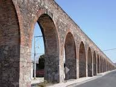
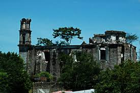

Haciendas e iglesias
Ex hacienda de San nicolas

Esta es una ex hacienda que data de la epoca de la revolucion y es una de las mas antiguas de izucar de matamoros.
Iglesia de Santiago Apostol

Esta es una iglesia muy antigua que tiene una extraordinaria historia te invitamos para que vengas a disfrutar de esta icreible iglesia.
Ex hacienda de Raboso

Esta es una ex hacienda muy antigua que hasta la fecha se encuentra situada en la localidad de raboso y es muy antigua y presiada te invitamos a visitarla.
REGRESAR AL INICIO